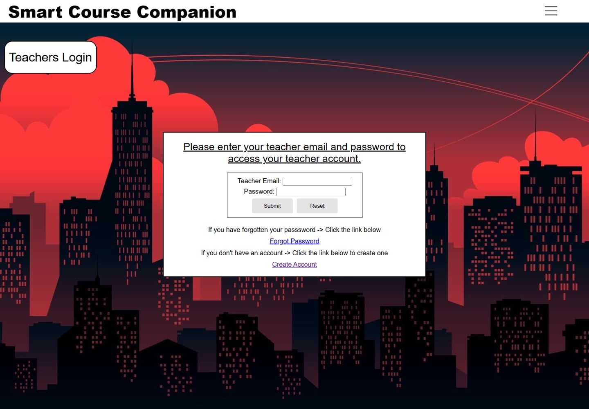
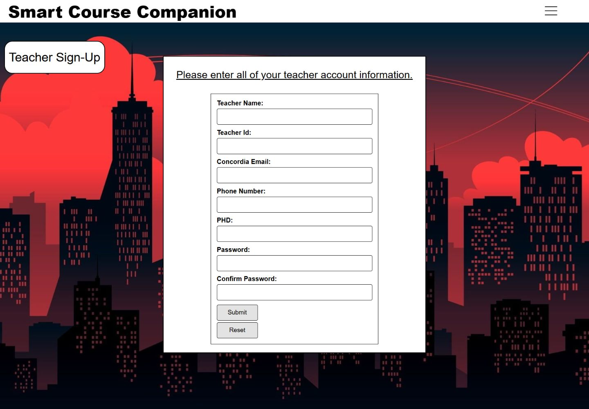

02 / Team project / Completed · April 2026
Smart Course Companion
A collaborative course-management application with separate student and instructor workflows. My contribution focused on creating and managing courses and assessments.
- My role
- Courses & assessments
- Context
- Team of four · Class project
- Status
- Completed · April 2026

One place for course information.
Smart Course Companion brings courses, assessments, grades, and an assessment calendar into one application. Students and instructors have separate accounts and dashboards.
We completed the original class project in April 2026 as a team of four. It is an educational prototype for local demonstration.
My contribution
I focused on course and assessment creation and management. This work supports the instructor’s workflow for organizing a course and defining the assessments students will complete.
The other team members handled authentication and account recovery, grades and calendar features, and integration and end-to-end testing. The project reflects that shared effort.
How it works
An instructor creates a course.
Course information includes a code, section, and term. The instructor can manage the course and its assessments.
A student joins the course.
Enrollment uses the matching course details to connect the student with the right class.
Assessments and grades stay connected.
Instructors enter grades; students can view assessment information, weighted grades, and calendar entries.
Tools used
- HTML, CSS & JavaScript
- Student and instructor pages, forms, and browser-side API interactions.
- Node.js + Express
- Application routes, authentication, and course, assessment, and grade APIs.
- SQLite + SQL
- Relational storage for users, courses, enrollments, assessments, and grades.
- Express sessions, bcrypt & Nodemailer
- Session handling, password hashing, and configurable password-reset email in the team’s authentication flow.
What I took from it
Building one part of a shared application means thinking beyond the screen itself: how data is structured, how another feature consumes it, and where responsibilities meet. Course and assessment management gave me practice with that full-stack connection.
This is a local demonstration project, not a production student-information system. The README includes setup instructions and notes on authentication and password-reset work that needs further review before a production launch.
